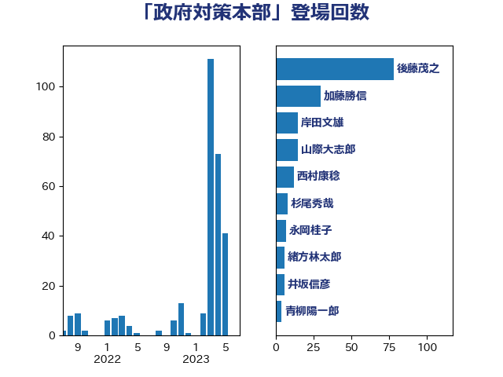

単語「政府対策本部」

| 後藤茂之 | 自由民主党 | 78 回 |
| 加藤勝信 | 自由民主党 | 30 回 |
| 岸田文雄 | 自由民主党 | 15 回 |
| 山際大志郎 | 自由民主党 | 15 回 |
| 西村康稔 | 自由民主党 | 12 回 |
| 杉尾秀哉 | 立憲民主党 | 8 回 |
| 永岡桂子 | 自由民主党 | 7 回 |
| 緒方林太郎 | 無所属 | 6 回 |
| 井坂信彦 | 立憲民主党 | 6 回 |
| 青柳陽一郎 | 立憲民主党 | 4 回 |
| 川田龍平 | 立憲民主党 | 4 回 |
| 塩川鉄也 | 日本共産党 | 4 回 |
| 吉田統彦 | 立憲民主党 | 4 回 |
| 吉川沙織 | 立憲民主党 | 3 回 |
| 伊佐進一 | 公明党 | 3 回 |
| 鈴木英敬 | 自由民主党 | 2 回 |
| 菅義偉 | 自由民主党 | 2 回 |
| 田村智子 | 日本共産党 | 2 回 |
| 松野博一 | 自由民主党 | 2 回 |
| 本田顕子 | 自由民主党 | 2 回 |
| 太栄志 | 立憲民主党 | 2 回 |
| 齋藤健 | 自由民主党 | 1 回 |
| 黄川田仁志 | 自由民主党 | 1 回 |
| 阿部司 | 日本維新の会 | 1 回 |
| 遠藤良太 | 日本維新の会 | 1 回 |
| 若松謙維 | 公明党 | 1 回 |
| 福重隆浩 | 公明党 | 1 回 |
| 畦元将吾 | 自由民主党 | 1 回 |
| 田中健 | 国民民主党 | 1 回 |
| 泉健太 | 立憲民主党 | 1 回 |
| 水野素子 | 立憲民主党 | 1 回 |
| 柴田巧 | 日本維新の会 | 1 回 |
| 松本尚 | 自由民主党 | 1 回 |
| 松本剛明 | 自由民主党 | 1 回 |
| 山岸一生 | 立憲民主党 | 1 回 |
| 寺田稔 | 自由民主党 | 1 回 |
| 大西英男 | 自由民主党 | 1 回 |
| 塩田博昭 | 公明党 | 1 回 |
| 城内実 | 自由民主党 | 1 回 |
| 吉田久美子 | 公明党 | 1 回 |
| 古賀友一郎 | 自由民主党 | 1 回 |
| 友納理緒 | 自由民主党 | 1 回 |
| 佐藤英道 | 公明党 | 1 回 |
| 井上哲士 | 日本共産党 | 1 回 |
| 中島克仁 | 立憲民主党 | 1 回 |